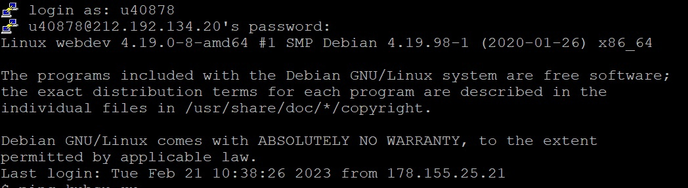
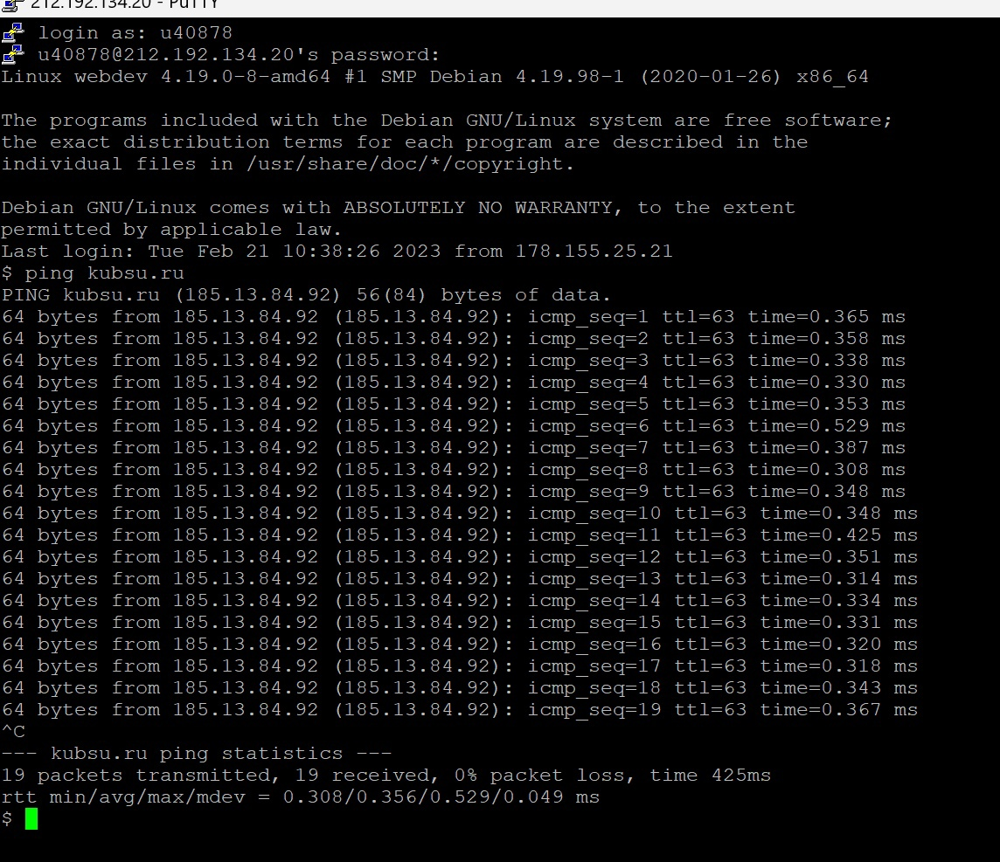
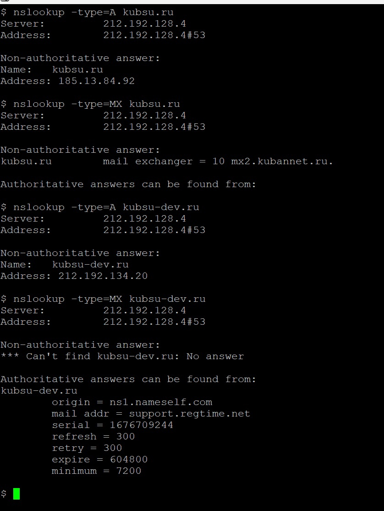
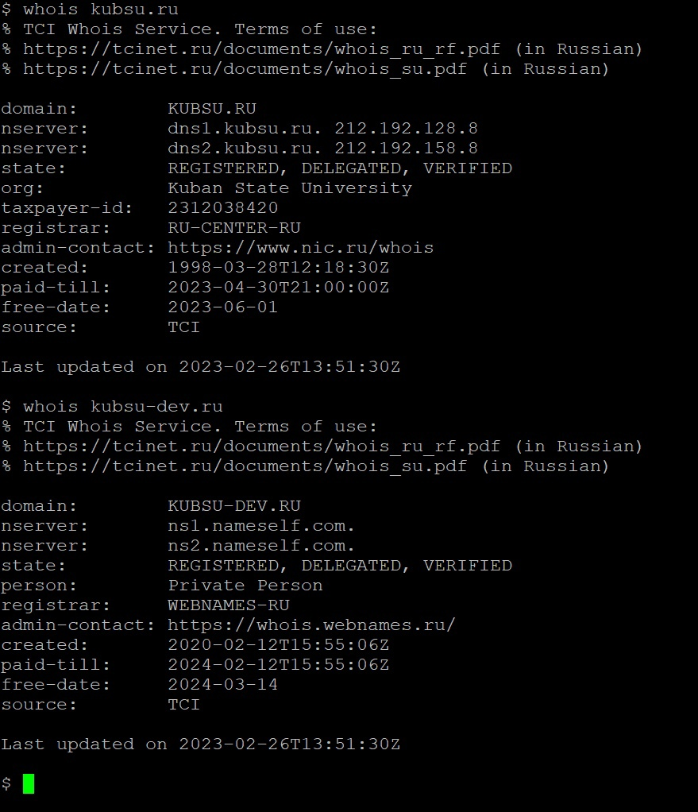
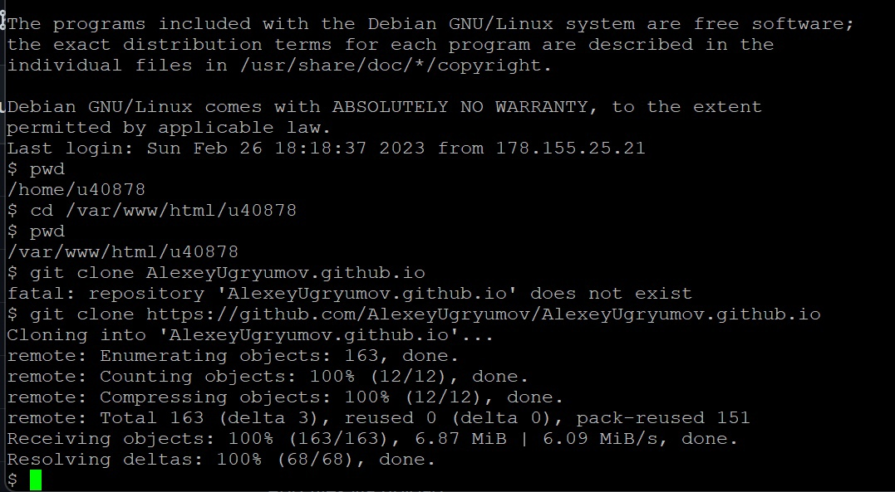
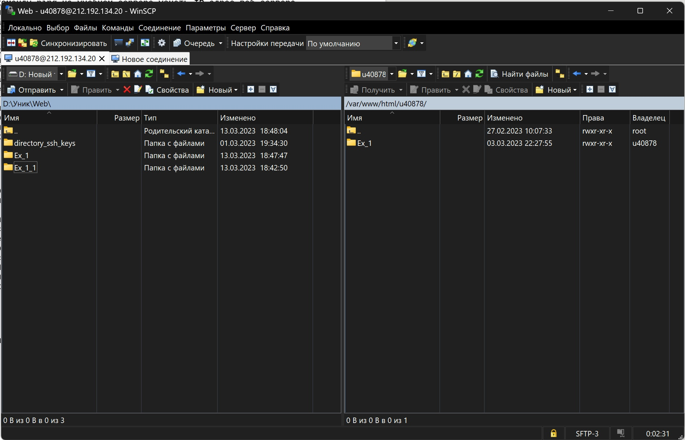

1)Подключаемся с помощью логина и паролья к учебному серверу.

2)С помощью команды ping узнаем ip адрес Kubsu.ru, а также узнаем пинг в мс.

3)С помощью команды nslookup узнаем А и Мх записи доменов kubsu.ru и kubsu-dev.ru (A-адресная запись, MX-почтовая).

4)С помощью команды whois узнаем даты регистраций доменов. Также можно увидеть что домен Kubsu.ru зарегестрирован на организацию, а kubsu-dev.ru на частное лицо.

5)Командой "cd /var/www/html/ u40878 переходим в каталог и с помощью команды git clone клонируем репозиторий с GitHub (командой pwd проверяем где мы находимся)

6)Через программу winscp(можно и через Filezilla) подключаемся к удаленному серверу и копируем оттуда файлы задания.
